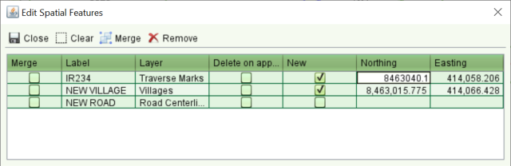

The Spatial Feature Tools let you add, edit or remove hydro, road or village spatial features from the map. This includes changing the name of a road, village, stream or lake.
Before you can edit or change an existing spatial feature, you first have to select it using
the Select
Feature tool. This will highlight the feature with a dark blue boarder and light yellow fill.
The node points of the features will be highlighted with light red squares. The tool also
allows you to deselect a feature that has been selected in error. Simply click the feature
again using the tool to toggle its selection state.
Select
Feature tool. This will highlight the feature with a dark blue boarder and light yellow fill.
The node points of the features will be highlighted with light red squares. The tool also
allows you to deselect a feature that has been selected in error. Simply click the feature
again using the tool to toggle its selection state.
The Edit
Spatial Feature tool lets you change the shape of a selected feature by dragging the node
points of the feature (highlighted as light red squares) with the mouse. This tool also
allows you to add a new node point to the feature using a single click of the mouse on or
near the feature boundary. To remove a node from the feature, hold down the Shift key and
single click on the node you want to remove.
Edit
Spatial Feature tool lets you change the shape of a selected feature by dragging the node
points of the feature (highlighted as light red squares) with the mouse. This tool also
allows you to add a new node point to the feature using a single click of the mouse on or
near the feature boundary. To remove a node from the feature, hold down the Shift key and
single click on the node you want to remove.
To view and edit details of the spatial feature, click the Edit Spatial Feature Details tool. This
will display the Edit Spatial Feature screen.
Edit Spatial Feature Details tool. This
will display the Edit Spatial Feature screen.

Edit Spatial Feature Screen
Using this screen you can change the label for the feature (i.e. the feature name) or mark the feature for deletion (by checking the Delete on approval check box) which will completely remove the feature from the map. Note that changes to spatial features are not applied until the application is approved. Until that time, the only place to view the new name assigned to the spatial feature or whether it is marked for deletion is this screen.
In addition to editing details of the feature, it is also possible to deselect a spatial
feature using the Remove button. This is the equivalent of deselecting the feature
using the
Remove button. This is the equivalent of deselecting the feature
using the Select
Spatial Feature tool and will not cause the feature to be deleted from the map when the
application is approved.
Select
Spatial Feature tool and will not cause the feature to be deleted from the map when the
application is approved.
When you click a feature in the Edit Spatial Features screen it will highlight the feature on the map to provide visual confirmation of the feature being changed. You can remove this highlight using theClear button.
 Merge
can be used to create a new feature from two or more existing spatial features within the
same layer (e.g. merge multiple road parcels into one). You need to select the features you
want to merge from the map first, then using the Edit Spatial Feature screen, check the Merge
checkbox (left column in table) to indicate which features are to merge. Once all features
are checked, click the
Merge
can be used to create a new feature from two or more existing spatial features within the
same layer (e.g. merge multiple road parcels into one). You need to select the features you
want to merge from the map first, then using the Edit Spatial Feature screen, check the Merge
checkbox (left column in table) to indicate which features are to merge. Once all features
are checked, click the Merge button. Note that the features selected for merge
must spatially overlap otherwise the merge will fail.
Merge button. Note that the features selected for merge
must spatially overlap otherwise the merge will fail.
The Add
New Hydro Parcel tool,
Add
New Hydro Parcel tool, Add New Road Parcel tool,
Add New Road Parcel tool, Add New Road Centerline tool and the
Add New Road Centerline tool and the Add New Village
tool can be used to create new hydro parcels, new road parcels and road centerlines and new
Village points as required. Once created, you can use the
Add New Village
tool can be used to create new hydro parcels, new road parcels and road centerlines and new
Village points as required. Once created, you can use the Edit Spatial Feature tool as well as
the
Edit Spatial Feature tool as well as
the Edit
Spatial Feature screen to update the new feature information. Note that any new features
created when processing a Record Plan (or Change Map) service will not be visible to other
users until the application is approved.
Edit
Spatial Feature screen to update the new feature information. Note that any new features
created when processing a Record Plan (or Change Map) service will not be visible to other
users until the application is approved.